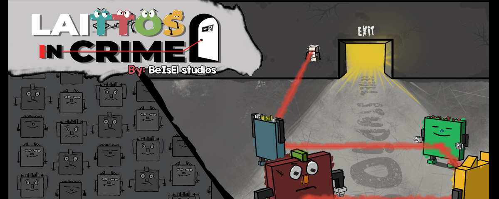
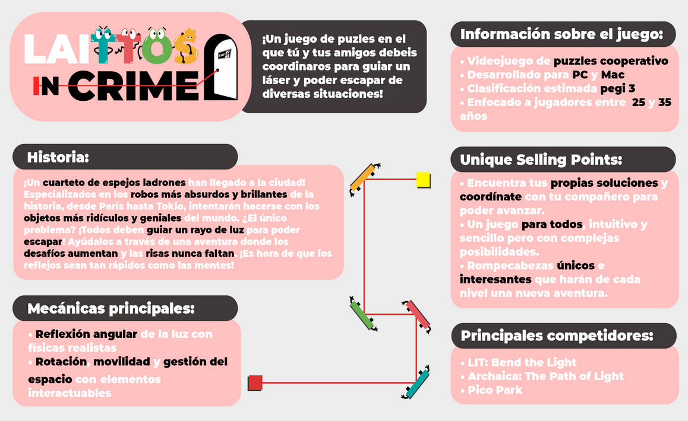

Date: February 2024 - October 2024 as Thesis for the Game Design Master.
Team role: Programmer and Gameplay Designer.
Itch.io page: Laittos in Crime
Gameplay video: Playtesting Best Moments Compilation
Github: Laittos in Crime Repository.If not visible, contact me at isabelarrans@gmail.com
Engine: Unity
Programming Languages: C#
External plugins or libraries: None
Platforms: Windows.
Genres: Puzzle, Party.
Target: 25 to 35 years.
PEGI: 3.
Summary: A local multiplayer videogame where you and your friends must coordinate to guide a laser from one point to another so you can escape various scenarios.
Main mechanics:
Unique Selling Points:
Main competitors:
Laittos in Crime
Project data
Date: February 2024 - October 2024 as Thesis for the Game Design Master.
Team role: Programmer and Gameplay Designer.
Itch.io page: Laittos in Crime
Gameplay video: Playtesting Best Moments Compilation
Github: Laittos in Crime Repository.If not visible, contact me at isabelarrans@gmail.com
Engine: Unity
Programming Languages: C#
External plugins or libraries: None
Resume
Platforms: Windows.
Genres: Puzzle, Party.
Target: 25 to 35 years.
PEGI: 3.
Summary: A local multiplayer videogame where you and your friends must coordinate to guide a laser from one point to another so you can escape various scenarios.
Main mechanics:
- Light reflection: with angular realistic physics
- Rotation, Movility, Space management: with interactable elements and obstacles
Unique Selling Points:
- Find your own solutions and coordinate with 3 friends to advance in the game
- For all publics: mechanics are intuitive and simple controls (just one joystick and one button).
- Unique puzzles quick to solve
Main competitors:
- Lit: Bend the Light
- Archaica: The Path of Light
- Pico Park